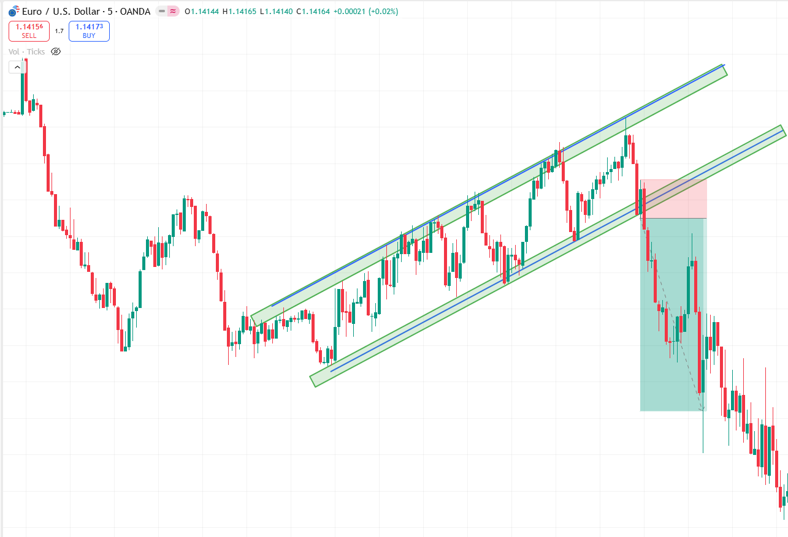

Professional trade management framework
This page is built like a trading playbook: you define the structure, mark the invalidation, plan the partials, and review the live trade through a checklist that can be repeated on every setup.
The 4-step management model
Build the trade before the trade starts
Execution quality improves when management decisions are made before the position is live. Know your entry logic, stop location, target structure, and whether you take partials or all-out exits. If you only start deciding after price moves, you are far more likely to improvise, cut winners early, or widen risk.
How to use partials without sabotaging edge
Partials can reduce emotional pressure, but they should not become a habit that destroys reward-to-risk. Use them for a reason: for example, scaling out at the first major obstacle while leaving a portion for the main target. The key is consistency. Random partials make it impossible to know whether your system actually works.
Managing the trade while it is open
Once the trade is active, focus on the conditions you planned around: structure, reaction speed, and whether price behaves as expected. A trade that stalls at the wrong place, fails to continue after confirmation, or reclaims invalidation territory may justify a reduced position or a full exit. Manage behavior, not feelings.
Execution review after the session
A good review asks how well you executed, not whether the trade won. Did you follow the target logic? Did you honor the stop? Did you interfere with the trade because of fear? Reviewing these details is how live execution improves week after week.
What matters most in this module
Use bigger charts so the management logic is obvious
Execution has to look like a playbook, not a random screenshot. Students should instantly see where the trade was opened, where risk became invalid, where profits were split, and why the final target made sense.
Two-Target Breakout Management
This is the strongest execution chart for the course because it clearly teaches target one, target two, and the logic behind holding a runner instead of closing the full position too early.

Explanation
The trade is structured around a breakout that leaves room for multiple objectives. This is ideal for teaching disciplined management rather than emotional profit-taking.
Entry
Enter on the break or retest only after the level is accepted and the invalidation point remains tight and logical.
Stop
Keep the stop beneath the breakout failure point so the trade is closed if price rotates back into the invalidation zone.
Targets
Target one pays the trade quickly. Target two is reserved for the full expansion move into the next major liquidity area.
Downtrend Breakout with Objective-Based Targets
This chart is excellent for teaching short-side execution. The move stays clean, old lows act as natural magnets, and students can practice staying with momentum instead of trying to pick a reversal too soon.

Explanation
Once price breaks lower with intent, the execution job is simple: avoid panic-taking profits and let structure guide the hold.
Entry
Enter once the break is confirmed or after a weak retest fails beneath the broken structure.
Stop
Place the stop above the breakdown failure point or above the last lower high that invalidates continuation.
Targets
Target prior lows in sequence. This gives students a cleaner reason to hold instead of exiting only because open profit feels uncomfortable.